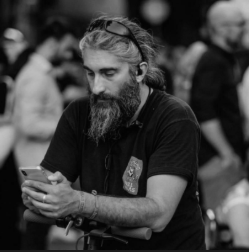

Head Manager
Fulvio De Rosa
Direttore artistico del Live Club di Trezzo sull’Adda dal 1997, direttore generale per Shining Production e membro del Consiglio direttivo di Assomusica. È una figura di riferimento nel mondo dell’organizzazione degli eventi in Italia.
Tra i festival legati al suo percorso ci sono il Rugby Sound di Legnano, il Mantova Summer Festival e l’Alghero Festival all’Anfiteatro Maria Pia.